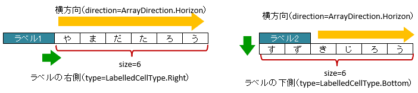
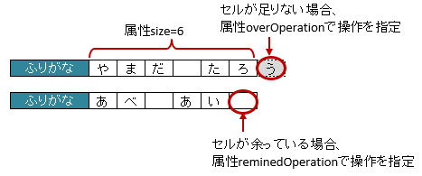
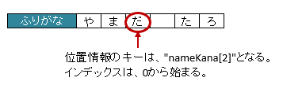
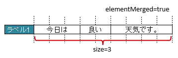
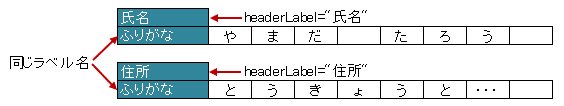
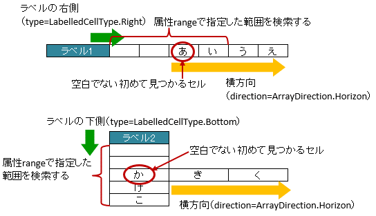
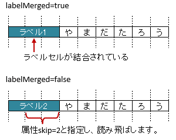

-
@Target(value={METHOD,FIELD}) @Retention(value=RUNTIME) @Documented @XlsFieldProcessor(value={}) public @interface XlsLabelledArrayCells
セルの見出し用のラベルセルを指定し、左右もしくは下側に連続し隣接するセルをCollection(List, Set)または配列にマッピングします。アノテーション
XlsArrayCellsとXlsLabelledCellを融合したアノテーションとなります。基本的な使い方
属性
label()で、見出しとなるセルの値を指定します。属性
type()で見出しとなるセルから見て、設定されている位置を指定します。属性
direction()で、連続する隣接するセルの方向を指定します。属性
size()で、マッピングするセルの個数を指定します。セルが見つからない場合はエラーとなりますが、属性
optional()を'true'とすることで無視して処理を続行します。配列または、
Collection(List/Set)にマッピングします。Collection型のインタフェースを指定している場合、読み込み時のインスタンスは次のクラスが指定されます。Listの場合、ArrayListがインスタンスのクラスとなります。Setの場合、LinkedHashSetがインスタンスのクラスとなります。
@XlsSheet(name="Users") public class SampleSheet { // ラベルの右側 + 横方向の隣接するセル // 属性directionを省略した場合は、ArrayDirection.Horizonを指定したと同じ意味。 @XlsLabelledArrayCells(label="ラベル1", type=LabelledCellType.Right, size=6) private List<String> nameKanas1; // ラベルの下側 + 横方向の隣接するセル // 属性optional=trueと設定すると、ラベルセルが見つからなくても処理を続行する @XlsLabelledArrayCells(label="ラベル2", type=LabelledCellType.Bottom, direction=ArrayDirection.Horizon, size=6, optional=true) private String[] nameKanas2; }基本的な使い方
書き込み時に配列・リストのサイズが不足、または余分である場合
アノテーションXlsArrayOptionを指定することで、書き込み時のセルの制御を指定することができます。属性
XlsArrayOption.overOpration()で、書き込み時にJavaオブジェクトの配列・リストのサイズに対して、属性size()の値が小さく、足りない場合の操作を指定します。属性
XlsArrayOption.remainedOperation()で、書き込み時にJavaオブジェクトの配列・リストのサイズに対して、属性size()の値が大きく、余っている場合の操作を指定します。@XlsSheet(name="Users") public class SampleSheet { @XlsLabelledArrayCells(label="ふりがな", type=LabelledCellType.Right, size=6) @XlsArrayOption(overOperation=OverOperation.Error, remainedOperation=RemainedOperation.Clear) private List<String> nameKana; }書き込み時の制御を行う場合
位置情報／見出し情報を取得する際の注意事項
マッピング対象のセルのアドレスを取得する際に、フィールドMap<String, CellPosition> positionsを定義しておけば、 自動的にアドレスがマッピングされます。
通常は、キーにはプロパティ名が記述（フィールドの場合はフィールド名）が入ります。
アノテーションXlsLabelledArrayCellsでマッピングしたセルのキーは、<プロパティ名>[<インデックス>]の形式になります。同様に、マッピング対象の見出しを取得する、フィールドMap<String, String> labelsへのアクセスも、 キーは<プロパティ名>[<インデックス>]の形式になります。
ただし、見出し情報の場合は、全ての要素が同じ値になるため、従来通りの <プロパティ名> でも取得できます。public class SampleRecord { // 位置情報 private Map<String, CellPosition> positions; // 見出し情報 private Map<String, String> labels; @XlsLabelledArrayCells(label="ふりがな", type=LabelledCellType.Right, size=6) private List<String> nameKana; } // 位置情報・見出し情報へのアクセス SampleRecord record = ...; CellPosition position = record.positions.get("nameKana[2]"); String label = recrod.labeles.get("nameKana[2]"); // 見出し情報の場合、従来通りのインデックスなしでも取得できる String label = recrod.labeles.get("nameKana");位置情報・見出し情報の取得
ラベルセルを正規表現、正規化して指定する場合
シートの構造は同じだが、ラベルのセルが微妙に異なる場合、ラベルセルを正規表現による指定が可能です。
また、空白や改行を除去してラベルセルを比較するように設定することも可能です。正規表現で指定する場合、アノテーションの属性の値を
/正規表現/のように、スラッシュで囲みます。- スラッシュで囲まない場合、通常の文字列として処理されます。
- 正規表現の指定機能を有効にするには、システム設定のプロパティ
Configuration.setRegexLabelText(boolean)の値を trueに設定します。
ラベセルの値に改行が空白が入っている場合、それらを除去し正規化してアノテーションの属性値と比較することが可能です。
- 正規化とは、空白、改行、タブを除去することを指します。
- ラベルを正規化する機能を有効にするには、、システム設定のプロパティ
Configuration.setNormalizeLabelText(boolean)の値を trueに設定します。
これらの指定が可能な属性は、
label()、headerLabel()です。// システム設定 XlsMapper xlsMapper = new XlsMapper(); xlsMapper.getConfiguration() .setRegexLabelText(true) // ラベルを正規表現で指定可能にする機能を有効にする。 .setNormalizeLabelText(true); // ラベルを正規化して比較する機能を有効にする。 // シート用クラス @XlsSheet(name="Users") public class SampleSheet { // 正規表現による指定 @XlsLabelledArrayCells(label="/名前.+/", type=LabelledCellType.Right, size=10) private List<String> names; @XlsLabelledArrayCells(label="コメント（オプション）", type=LabelledCellType.Right, size=5) private String[] comments; }- 導入されたバージョン:
- 2.0
- 作成者:
- T.TSUCHIE
-
-
必須要素のサマリー
必須要素 修飾子とタイプ 必須要素と説明 intsize連続するセルの個数を指定します。LabelledCellTypetype見出しセルから見て値が設定されているセルの位置を指定します。
-
任意要素のサマリー
任意要素 修飾子とタイプ 任意要素と説明 ProcessCase[]cases適用するケースを指定します。ArrayDirectiondirection連続し隣接するセルの方向を指定します。Class<?>elementClass配列またはリスト要素の値のクラスを指定します。booleanelementMerged値のセルが結合している場合、それを考慮するかどうか指定します。StringheaderLabel同じラベルのセルが複数ある場合は、区別するため見出しを属性headerLabel()で指定します。Stringlabel見出しとなるセルの値を指定します。intlabelColumn見出しとなるセルの列番号を指定します。booleanlabelMergedラベルセルが結合している場合を考慮するかどうか指定します。intlabelRow見出しとなるセルの行番号を指定します。booleanoptionalセルが見つからなかった場合はエラーとなりますが、optional属性にtrueを指定しておくと、無視して処理を続行します。intrange属性type()の位置に向かって指定したセル数分を検索し、最初に発見した空白以外のセルを開始位置としてマッピングします。intskipラベルセルから指定したセル数分離れたセルを開始位置としてマッピングする際に指定します。
-
-
-
-
type
public abstract LabelledCellType type
見出しセルから見て値が設定されているセルの位置を指定します。
-
-
-
elementMerged
public abstract boolean elementMerged
値のセルが結合している場合、それを考慮するかどうか指定します。 この値により、属性size()の指定方法が変わります。セル結合されている場合は、結合後の個数を指定します。
- trueの場合は、結合されているセルを1つのセルとしてマッピングします。
- falseの場合は、結合されていても解除した状態と同じマッピング結果となります。
ただし、書き込む際には、結合が解除されます。
@XlsSheet(name="Users") public class SampleSheet { // elementMerged=trueは初期値なので、省略可 @XlsLabelledArrayCells(label="ラベル1", type=LabelledCellType.Right,size=3, elementMerged=true) private List<String> words; }結合したセルをマッピングする場合
- 戻り値:
- trueの場合、値のセルが結合されていることを考慮します。
- デフォルト:
- true
-
-
-
direction
public abstract ArrayDirection direction
連続し隣接するセルの方向を指定します。セルの位置
type()をLabelledCellType.Leftのとき、 セルの方向direction()をArrayDirection.Horizonは、設定できません。@XlsSheet(name="Users") public class SampleSheet { // ラベルの右側 + 横方向の隣接するセル // 属性direction=ArrayDirection.Verticalを指定すると、縦方向にマッピングします。 @XlsLabelledArrayCells(label="ラベル3", type=LabelledCellType.Right, direction=ArrayDirection.Vertical, size=4) private List<String> nameKanas3; // ラベルの下側 + 横方向の隣接するセル @XlsLabelledArrayCells(label="ラベル4", type=LabelledCellType.Bottom, direction=ArrayDirection.Vertical, size=4) private String[] nameKanas4; }
属性directionの概要
- 戻り値:
- セルの方向を指定します。
- デフォルト:
- com.gh.mygreen.xlsmapper.annotation.ArrayDirection.Horizon
-
-
-
elementClass
public abstract Class<?> elementClass
配列またはリスト要素の値のクラスを指定します。省略した場合、定義されたたGenericsの情報から取得します。
- デフォルト:
- java.lang.Object.class
-
-
-
optional
public abstract boolean optional
セルが見つからなかった場合はエラーとなりますが、optional属性にtrueを指定しておくと、無視して処理を続行します。falseを指定し、セルが見つからない場合は、例外
CellNotFoundExceptionがスローされます。- デフォルト:
- false
-
-
-
label
public abstract String label
見出しとなるセルの値を指定します。システム設定により、正規表現による指定や正規化（改行、空白、タブの削除）による比較の対象となります。
- デフォルト:
- ""
-
-
-
labelRow
public abstract int labelRow
見出しとなるセルの行番号を指定します。labelColumn()属性とセットで指定します。この属性は、
XlsIterateTablesの中で指定したときに、処理内部で使用されるため、通常は設定しません。- 戻り値:
- 値は0から始まります。-1以下の負の値は無視されます。
- デフォルト:
- -1
-
-
-
labelColumn
public abstract int labelColumn
見出しとなるセルの列番号を指定します。labelRow()属性とセットで指定します。この属性は、
XlsIterateTablesの中で指定したときに、処理内部で使用されるため、通常は設定しません。- 戻り値:
- 値は0から始まります。-1以下の負の値は無視されます。
- デフォルト:
- -1
-
-
-
headerLabel
public abstract String headerLabel
同じラベルのセルが複数ある場合は、区別するため見出しを属性headerLabel()で指定します。属性
headerLabel()で指定したたセルから、属性label()で指定したセルを下方向に検索し、 最初に見つかったセルをラベルセルとして使用します。システム設定により、正規表現による指定や正規化（改行、空白、タブの削除）による比較の対象となります。
@XlsSheet(name="Users") public class SampleSheet { @XlsLabelledCell(label="ふりがな", type=LabelledCellType.Right, size=10, headerLabel="氏名") private List<String> nameRuby; @XlsLabelledCell(label="ふりがな", type=LabelledCellType.Right, size=10, headerLabel="住所") private List<String> addressRuby; }属性headerLabelの概要
- 戻り値:
- 見出しとなるセルを指定します。指定しない場合は空文字を指定します。
- デフォルト:
- ""
-
-
-
range
public abstract int range
属性type()の位置に向かって指定したセル数分を検索し、最初に発見した空白以外のセルを開始位置としてマッピングします。属性
range()とskip()を同時に指定した場合、まず、skip分セルを読み飛ばし、そこからrangeの範囲で空白以外のセルを検索します。この属性 は、 読み込み時のみ有効 です。書き込み時に指定しても無視されます。
ただし、データセルが偶然空白のときは、マッピング対象のセルがずれるため、この属性を使用する場合は注意が必要です。@XlsSheet(name="Users") public class SampleSheet { @XlsLabelledArrayCells(label="ラベル1", type=LabelledCellType.Right, range=4, size=4) private List<String> words1; @XlsLabelledArrayCells(label="ラベル2", type=LabelledCellType.Bottom, range=5, size=3) private List<String> words2; }属性rangeの概要
- 戻り値:
- 値は1から始まります。指定しない場合は1を指定します。
- デフォルト:
- 1
-
-
-
skip
public abstract int skip
ラベルセルから指定したセル数分離れたセルを開始位置としてマッピングする際に指定します。属性
type()の方向に向かってラベルセルから指定したセル数分離れたセルを開始としてマッピングすることができます。属性
range()とskip()を同時に指定した場合、まず、skip分セルを読み飛ばし、そこからrangeの範囲で空白以外のセルを検索します。@XlsSheet(name="Users") public class SampleSheet { @XlsLabelledCell(label="ラベル1", type=LabelledCellType.Right, size=3, skip=2) private List<String> wrods2; @XlsLabelledCell(label="ラベル2", type=LabelledCellType.Bottom, size=3, skip=3) private List<String> wrods2; }
属性skipの概要
- 戻り値:
- 値は0から始まります。0以下の値は無視されます。
- デフォルト:
- 0
-
-
-
labelMerged
public abstract boolean labelMerged
ラベルセルが結合している場合を考慮するかどうか指定します。- 値がtrueのとき、結合されているセルを1つのラベルセルとしてマッピングします。
- 値がfalseの場合は、結合されていても解除した状態と同じマッピング結果となります。
初期値はtrueであるため、結合されているかどうかは特に意識はする必要はありません。
labelMerged()の値が falseのとき、ラベルセルが結合されていると、 値が設定されているデータセルまでの距離が変わるため、属性skip()を併用します。@XlsSheet(name="Users") public class SampleSheet { // labelMerged=trueは初期値なので、省略可 @@XlsLabelledArrayCells(label="ラベル1", type=LabelledCellType.Right, size=6) private List<String> name1; // labelMerged=falseで、ラベルが結合しているときは、skip属性を併用します。 @XlsLabelledCell(label="ラベル1", type=LabelledCellType.Right, size=6, labelMerged=false, skip=2) private List<String> name2; }属性labelMergedの概要
- 戻り値:
- trueの場合、ラベルがセルが結合されていることを考慮します。
- デフォルト:
- true
-
-
-
cases
public abstract ProcessCase[] cases
適用するケースを指定します。- 戻り値:
- 何も指定しない場合は全てのケースに適用されます。
- 導入されたバージョン:
- 2.0
- デフォルト:
- {}
-
-